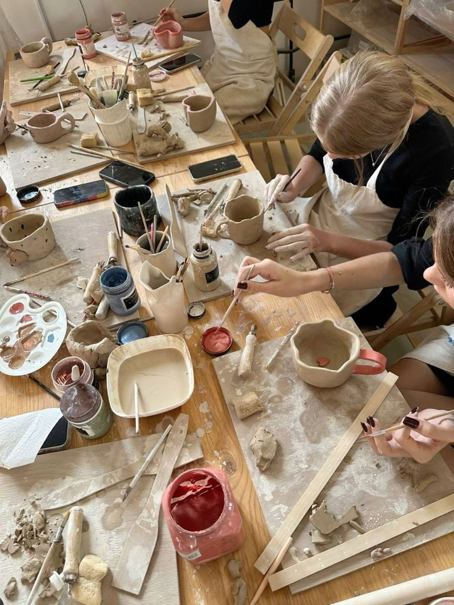
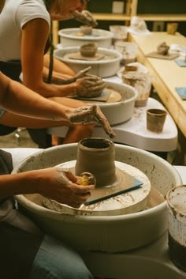
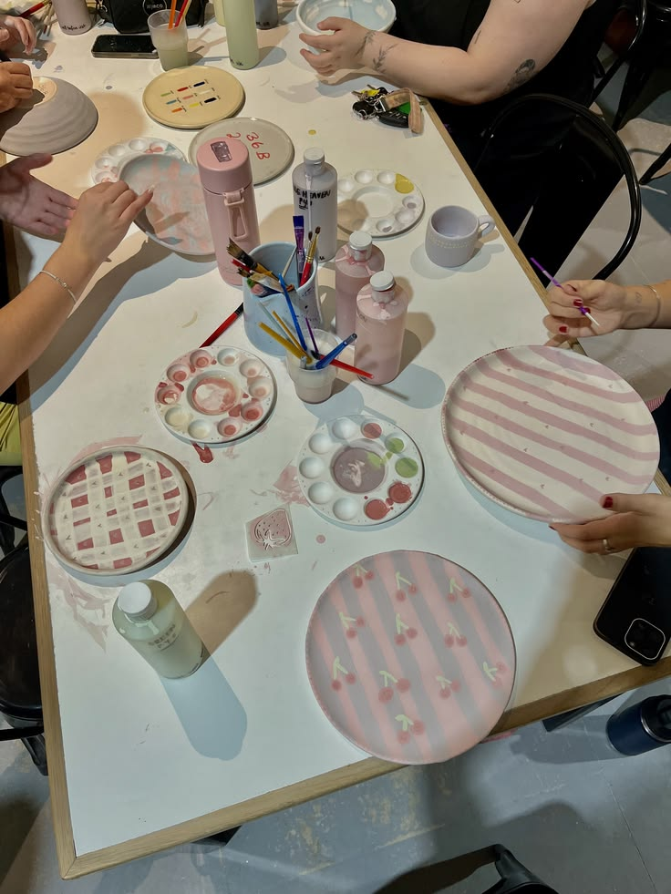
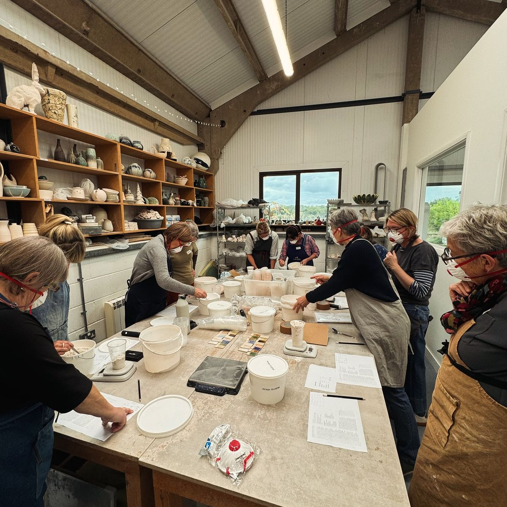

temukan pengalaman baru dalam berkarya melalui workshop bersama Klayé Studio. Kenali proses pembuatan keramik, eksplorasi kreativitas, dan ciptakan karya handmade versimu sendiri.
Ini beberapa kelas yang bisa kamu ikuti:

Belajar membentuk tanah liat menggunakan tangan tanpa roda putar

Mengenal teknik membentuk tanah liat menggunakan roda putar.

Menghias keramik dengan menggunakan warna dan berbagai motif.

Mengenal teknik pemberian glasir untuk menghasilkan tampilan akhir keramik yang menarik.
Informasi lebih lanjut tentang setiap kelas workshop dapat ditemukan di bawah ini.
Setiap kelas workshop memiliki durasi yang berbeda, mulai dari 1 hingga 3 jam, tergantung pada jenis kegiatan, teknik pembuatan, serta tingkat kesulitan yang dipilih. Selama kegiatan berlangsung, peserta akan mendapatkan arahan dan pendampingan dari instruktur agar dapat mengikuti setiap tahapan pembuatan keramik
Jadwal pelaksanaan workshop tersedia secara berkala dan dapat berubah sesuai dengan ketersediaan kelas. Informasi mengenai tanggal, waktu, serta kelas yang sedang dibuka akan diumumkan melalui Instagram resmi kami, @klayestudio. Peserta juga dapat menghubungi tim Klayé Studio untuk mendapatkan informasi lebih lanjut mengenai jadwal workshop yang tersedia.
Biaya untuk mengikuti workshop bervariasi, mulai dari 75.0000, tergantung pada jenis kelas, teknik pembuatan, bahan yang digunakan, serta fasilitas yang disediakan selama kegiatan berlangsung. Setiap kelas memiliki biaya yang berbeda sesuai dengan pengalaman dan materi yang ditawarkan. Untuk mengetahui informasi biaya secara lebih lengkap, peserta dapat menghubungi kami melalui halaman kontak atau Instagram @klayestudio.
Workshop Klayé Studio dilaksanakan secara langsung di studio kami yang berlokasi di Jl. Mikrocosmos No. 7, Kota Mihu, Indonesia. Peserta dapat mengikuti seluruh rangkaian kegiatan di lingkungan studio yang telah disiapkan untuk menunjang proses pembuatan keramik. Pastikan untuk memperhatikan informasi lokasi dan waktu pelaksanaan sebelum datang ke studio.
Setiap peserta memiliki kesempatan untuk membawa pulang hasil karya keramik yang telah dibuat selama workshop. Setelah melalui proses pembentukan, pengeringan, finishing, dan pembakaran sesuai dengan jenis keramik yang digunakan, karya akan menjadi hasil akhir yang dapat disimpan sebagai kenang-kenangan. Setiap karya memiliki bentuk dan karakteristik tersendiri sehingga memberikan pengalaman yang unik bagi setiap peserta.